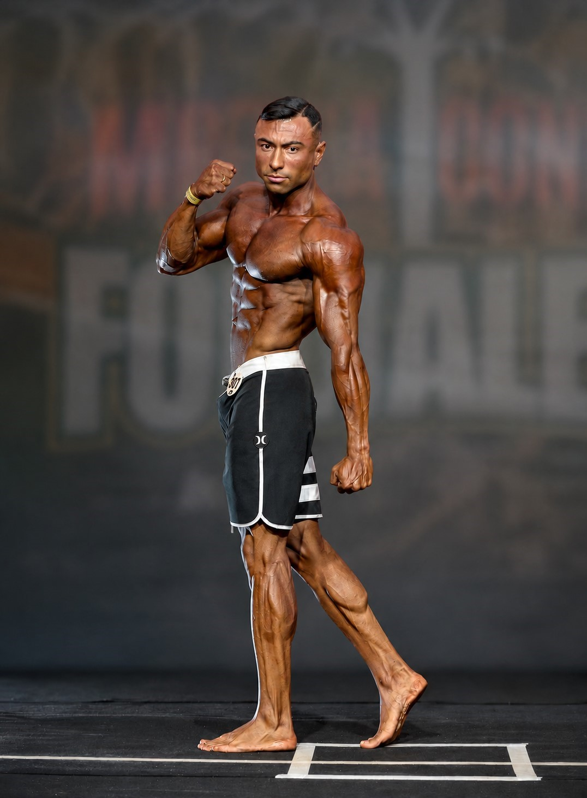

Você tenta de tudo, mas o peso não muda
Dietas restritivas, jejuns extremos, planilhas aleatórias — nada dá o resultado que você merece.

Construa massa muscular, emagreça e aumente sua performance com um plano alimentar que respeita sua rotina — sem dietas extremas.
Antes de mudar o seu corpo, é preciso entender por que os planos anteriores não funcionaram. É daí que a gente começa.
Dietas restritivas, jejuns extremos, planilhas aleatórias — nada dá o resultado que você merece.
Sem uma nutrição alinhada ao treino, o esforço na academia se perde e o corpo não responde.
Planos genéricos, pouca variedade e nada saboroso. Comer bem virou uma obrigação chata.
Fadiga constante, baixa performance e recuperação lenta comprometendo seu dia a dia.
Efeito sanfona, ansiedade e compulsão fazem o resultado durar apenas algumas semanas.
Sem tempo para planejar refeições, você acaba comendo mal e sabotando seus objetivos.
Um processo claro, estruturado e testado com dezenas de pacientes — do primeiro contato aos resultados que se mantêm.
Anamnese detalhada, histórico clínico, rotina, treinos e exames para entender exatamente onde você está.
Um cardápio construído para o seu objetivo com praticidade e alimentos que você gosta em horários que cabem na sua rotina real.
Suporte contínuo por WhatsApp, ajustes semanais e retornos programados para manter você sempre no caminho certo.
Mudanças reais no corpo, no desempenho e na sua relação com a comida — para durar muito além do plano.

Sou Gustavo Souza, nutricionista esportivo em Caucaia/CE. Ajudo pessoas comuns e atletas a evoluírem através de uma nutrição inteligente, sustentável e alinhada à rotina real de cada um.
Meu trabalho vai muito além de entregar um cardápio. Construo junto com você um processo de mudança que respeita seu histórico, seus objetivos e o seu tempo — sem promessas milagrosas.
Um cuidado profissional, próximo e estratégico — do primeiro contato até a manutenção do seu resultado.
Cardápio único, montado a partir dos seus exames, rotina, preferências e objetivos.
Estratégias específicas para pré, durante e pós-treino conforme sua modalidade.
Sem restrições impossíveis. Uma abordagem que respeita seu metabolismo e seu prazer.
Você não fica sozinho entre uma consulta e outra — ajustes rápidos sempre que precisar.
Escuta ativa, acolhimento e um plano que respeita quem você é, não um paciente qualquer.
Cada corpo é único. Cada plano também. Nada de fórmulas prontas ou dietas de internet.
Transformações de pacientes acompanhados de perto, com nutrição individualizada e consistência.
Resultados individuais variam conforme adesão ao plano, rotina e histórico de cada paciente.
Quero resultados como esses“Nunca fui tão bem atendida. Gustavo entendeu minha rotina e montou algo que consigo seguir de verdade. Em 4 meses ganhei massa e desempenho.”
“Já tinha tentado várias dietas. Com o Gustavo, entendi como comer bem sem sofrer. Perdi 11kg e mantive por mais de um ano.”
“O suporte no WhatsApp faz toda diferença. Ajustes rápidos, orientação em provas, cardápio saboroso. Meu tempo de prova caiu 8 minutos.”
“Profissional atento aos detalhes. Explicou tudo, me mostrou exames, ajustou treino e alimentação. Hipertrofia veio junto com saúde.”
Agende sua consulta agora pelo WhatsApp e receba um plano nutricional feito para o seu corpo, seus objetivos e sua rotina.
Resposta rápida • Atendimento em Caucaia/CE e online